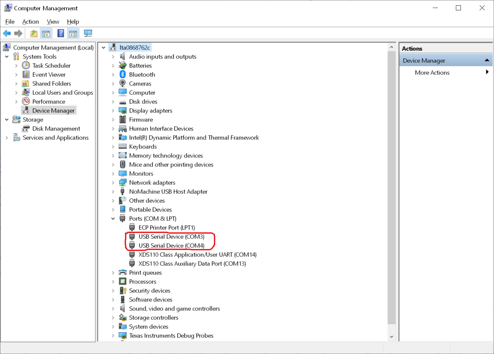
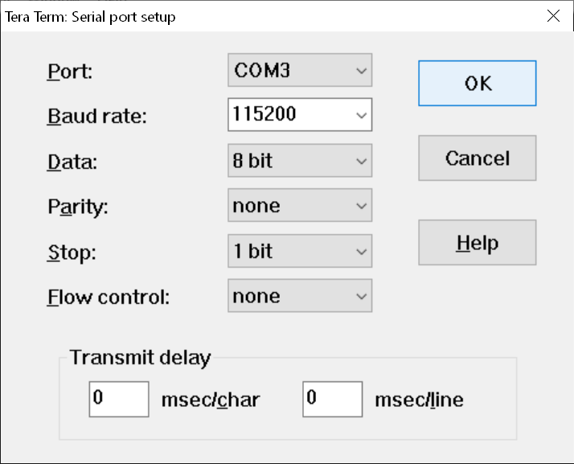
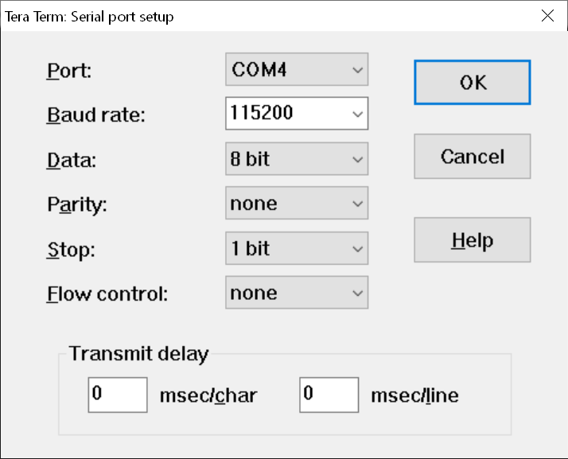
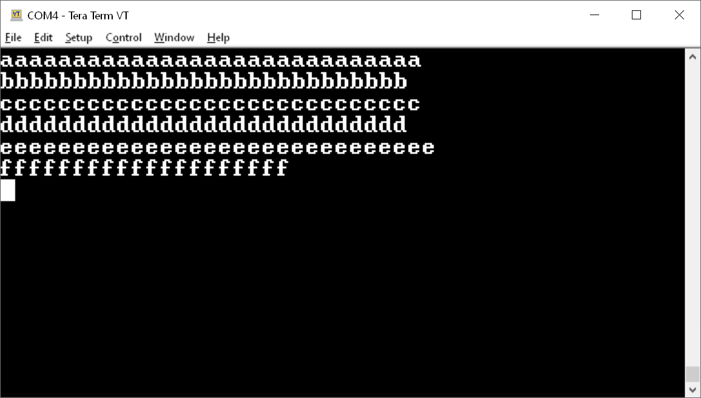
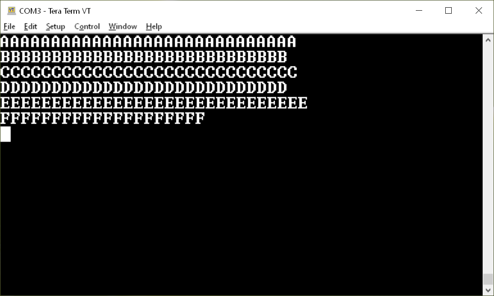
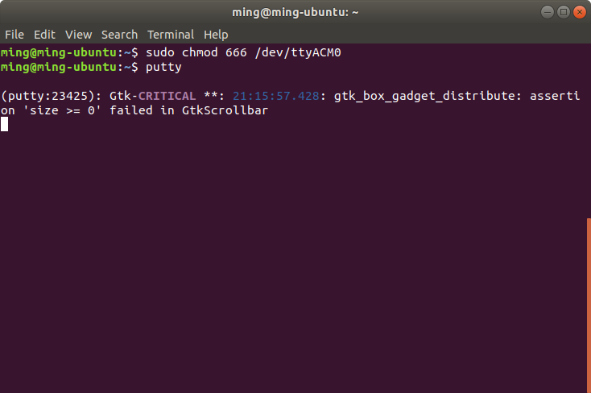
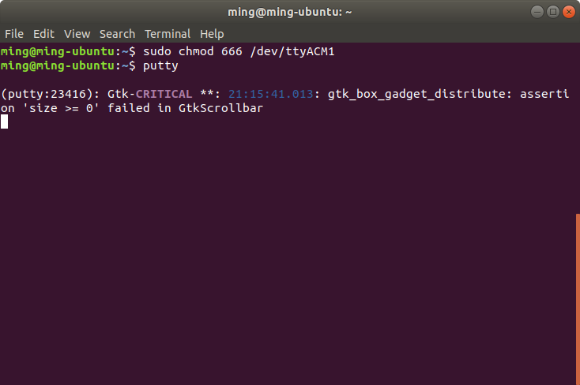
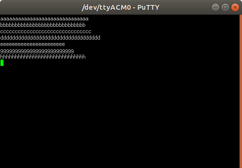
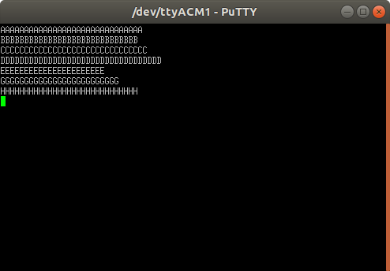

Introduction
This example is a USB device CDC-ACM application based on USB CDC class from TinyUSB.
The example does the below
- Initializes the TinyUSB USB core driver and CDC class
- Create two virtual COM ports visible to an USB host
- Any alphabetic input from the USB host will be echo-ed back in lower case on one COM and in upper case in the other COM port
USB Logging Template Example
- This example also demonstrate how to enable logging for USB using shared memory log feature.
- The R5FSS0_0_freertos/nortos core will write logs in the shared memory and R5FSS0_1_freertos/nortos core will read and print it on UART0.
- see USB for more information on how to enable USB logs.
- see Debug for more information on how to enable shared memory log feature.
- Note
- Enabling logs in debug build may lead to unwanted behaviour as the application code is build with -O0 flag.
- It is recomended to use release build when USB logging is enabled.
Supported Combinations
| Parameter | Value |
| CPU + OS | r5fss0-0_freertos |
| r5fss0_1_freertos log Reader |
| r5fss0-0_nortos |
| r5fss0-1_nortos log Reader |
| Toolchain | ti-arm-clang |
| Board | am64x-evm |
| Example folder | examples/usb/device/cdc_echo |
Steps to Run the Example
Build the example
- When using CCS projects to build, import the CCS project for the required combination and build it using the CCS project menu (see Using SDK with CCS Projects).
- When using makefiles to build, note the required combination and build using make command (see Using SDK with Makefiles)
HW Setup
- To test the application, one can use a Windows/Linux PC as a USB host
- Connect the J24 on AM64x/AM243x EVM to the USB host

USB 2.0 Host/Device Connector
Run the example
- Launch a CCS debug session and run the executable, see CCS Launch, Load and Run
- When the application is running, two COM ports will be enumerated on the USB host
For Window 10
- The two enumerated COM ports can be displayed using the Device Manager on Windows 10,

COM ports (COM3 and COM4) displayed using Deveice Manager
- On USB host, use any serial port communication program, like Tera Term, to connect to those two COM ports

Using Tera Term to connect to port 1

Using Tera Term to connect to port 2
- Type in any alphabetic characters, the lower case of the input will be displayed on one COM port and the upper case of the input will be displayed on the other COM port

Lower Case Input Echo-ed

Upper Case Input Echo-ed
For Linux
- The two enumerated serial ports can be enumerated as "/dev/ttyACM0" and "/dev/ttyACM1"
- On Linux, one has to change the access right for those two serial ports as shown below.
- Then use any serial port communication program, like putty, to connect to those two serial ports

Using putty to connect to port 1

Using putty to connect to port 2
- Type in any alphabetic characters, the lower case of the input will be displayed on one COM port and the upper case of the input will be displayed on the other COM port

Lower Case Input Echo-ed

Upper Case Input Echo-ed
See Also
USB
 1.8.20
1.8.20